今天要讲的工作流，就是帮大家解决什么时候该干什么的问题，保证关键动作一件都不漏。今天的主题是图形化课导工作流。这套工作流专门为课导岗位梳理，从接班一直到结课，每个阶段做什么、为什么做、做到什么程度，我们都会讲清楚。不管你是刚入行的新人，还是已经带过几期班的老课导，都可以借这节课把自己的工作重新理一遍，把服务做得更扎实。
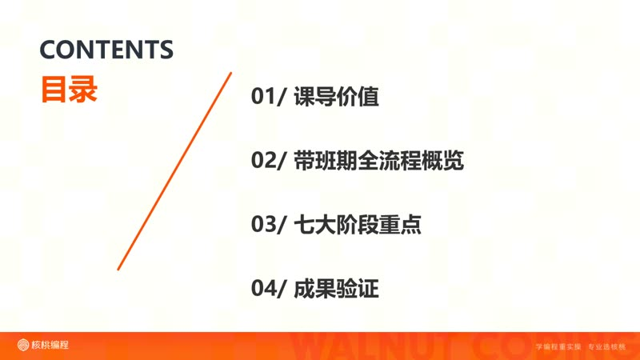
先看今天的整体框架，一共四个板块。第一块，课导价值。先想明白课导这份工作为什么重要，价值落在哪里。第二块，带班期全流程概览。给大家一张带班全景图，看清楚半年里每个节点在什么时候、要做什么。第三块，七大阶段重点，这是今天的核心。我们会把每个阶段的目标和关键动作逐一拆开，讲清楚做什么、为什么做、做到什么程度。第四块，成果验证，用真实的战绩看看，把这些动作做扎实能拿到什么结果。从认知，到方法，再到结果，我们一步一步来看。
先进入第一个板块，课导价值导向。课导在我们整个电销转化链路里，位置至关重要，核心定位就是承上启下。它不是简单打一通电话、完成一个动作，而是学习的关键一环。这份价值，我们拆成三个层面来看。
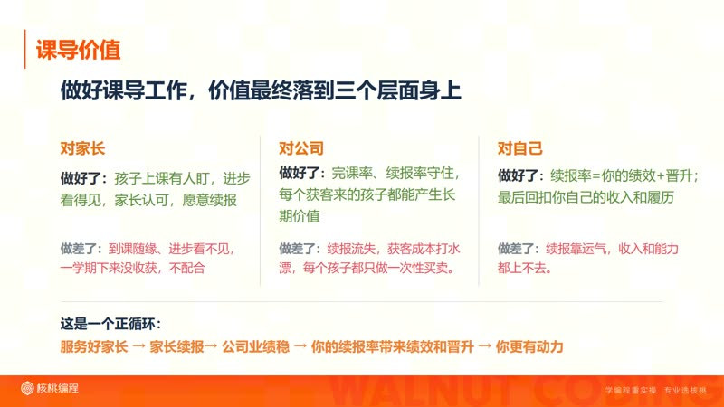
这三个层面分别是：面向家长、面向公司、面向自己。首先是家长层面。我们要给家长交付可感知的学习成果。家长能清楚感知到：孩子上课有人跟进、有人盯学习、有问题有人及时解答。这些看得见的服务，会收获家长的信任和认可。家长认可了，才会愿意跟着我们继续规划下一阶段学习、选择续报。反过来，如果我们服务缺位，家长看不到孩子的学习进展，配合度会慢慢下降，等到续报节点，家长自然没有继续学习的想法。第二个是公司层面。课导做好服务，直接拉动完课率、续报率，最终真正帮孩子实现持续成长。大家要明白，前端每一个新生，公司都是投入了获客成本的，不是零成本。我们课导的作用，就是把一次性的流量，变成长期学习的学员，让家长和孩子持续拿到长期价值，一阶一阶往下学。如果服务没跟上，用户体验差、学一次就流失，那前端投入的获客成本，全部白费了。第三个，落到我们自己身上。最直观的就是绩效收入，其次是长期的职业发展。把课导工作做扎实，不管是当下的薪资收益，还是后续想要晋升、往管理方向成长，这都是核心底气。反过来，如果工作没做到位，一方面很难拿到理想收入，另一方面也很难获得学员和家长的正向反馈，缺少成就感，工作状态自然很难提上来。所以大家会发现，课导这份工作，本质是一套正向循环： 我们用心服务家长，让家长真切看见课程价值、感受到你的专业服务，认可我们的教学，愿意续报；稳定的续报，会给公司沉淀源源不断的在读生源，还会带来老带新转介绍；生源稳定、转化向好，我们的续报指标、绩效收入也跟着持续向好。一环扣一环，形成良性闭环。来判断一下，做好课导工作，只对课导自身有价值？
互动题
做好课导工作，只对课导自身有价值？
- A. 对
- B. 错
选错后：重讲本页重触发
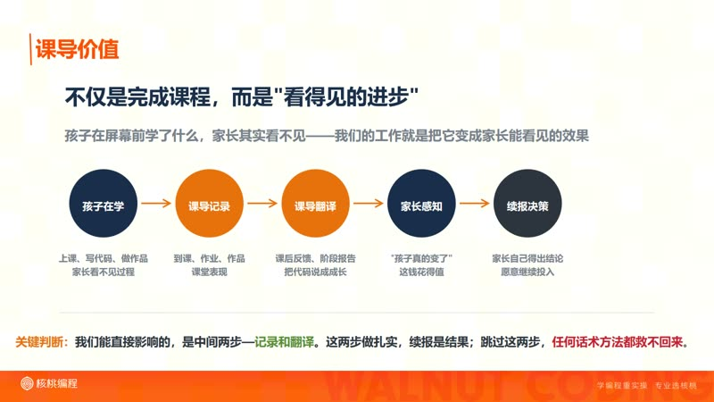
那课导的核心价值，具体落在哪里？一句话：不仅是完成课程，而是让家长看到看得见的进步。现在的家长，很少能每节课都陪在孩子身边，孩子在屏幕前学了什么、写了什么代码、做了什么作品，家长其实是看不见的。我们的工作，就是把这个看不见的过程，变成家长能看见的效果。看屏幕上这条链路，一共五步。第一步，孩子在学，上课、写代码、做作品，但家长看不到过程。第二步，课导记录，把到课、作业、作品、课堂表现这些情况记下来。第三步，课导翻译，通过课后反馈、阶段报告，把代码说成成长，让家长听得懂孩子哪里变了。第四步，家长感知，家长看完会觉得，孩子真的变了，这钱花得值。第五步，续报决策，家长自己得出结论，愿意继续投入。这里有一个关键判断：我们能直接影响的，是中间两步，记录和翻译。这两步做扎实了，续报是自然而然的结果；跳过这两步，任何话术、任何方法都救不回来。大家想一想，孩子学→课导做什么→家长感知→续报，课导能直接掌控的是哪两步？
互动题
孩子学→课导做什么→家长感知→续报，课导能直接掌控的是哪两步？
- A. 记录＋翻译
- B. 上课＋写代码
- C. 家长感知＋续报决策
- D. 催费＋追单
选错后：仅弹正确提示继续
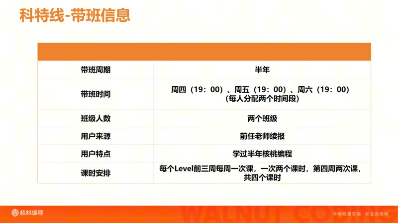
了解科特线的带班信息。先说整体周期：科特线完整行课周期是半年，一共划分 6 个 Level。带班时间是周四、周五、周六晚上7点三个时段，每位课导分配其中两个时段，一般带两个班。再看学员来源，这点非常关键：科特线的学员，都是从一阶课导服务续报上来的。也就是说，这批孩子已经在我们这边有半年的学习基础，很多孩子接触过等级考试、国家级赛事，对编程本身有基础认知。而且正是因为在第一阶段体验到了我们完整、优质的服务，家长才愿意继续续报进入第二个阶段然后我们看课时排布规则：半年周期拆成 6 个 Level。每个 Level 里面，前三周，每周 1 次课，一次课包含 2 个课时；到了每个 Level 的第四周，节奏会调整为一周 2 次课。除了家长选定的常规时段外，我们会额外在周日加开一次和赛事有关的课程，用来做二阶段的赛事冲刺。来看一道题，科特带班每个 Level 的课时结构是？
互动题
科特带班每个 Level 的课时结构是？
- A. 前三周每周一次课（一次两课时），第四周两次课（共四课时）
- B. 每周两次课，共八课时
- C. 前三周每周两次课，第四周一次课
- D. 每周一次课，一次一课时
选错后：重讲本页重触发
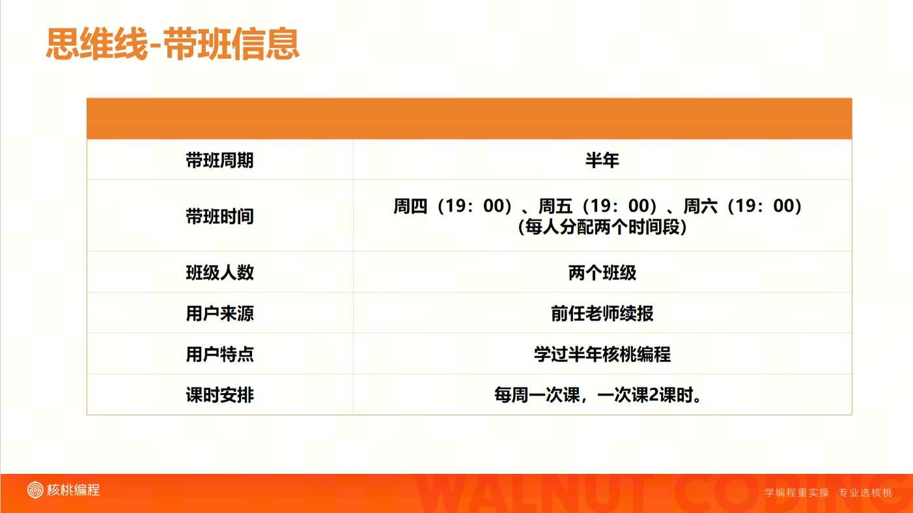
了解思维线的带班信息。先说整体周期：思维线完整行课周期是半年，一共划分 6 个 Level。带班时间是周四、周五、周六晚上7点三个时段，每位课导分配其中两个时段，一般带两个班。再看学员来源，这点非常关键：到二阶段的学生，都是从一阶课导服务续报上来的。也就是说，这批孩子已经在我们这边有半年的学习基础，很多孩子接触过等级考试、国家级赛事，对编程本身有基础认知。而且正是因为在第一阶段体验到了我们完整、优质的服务，家长才愿意继续续报进入第二个阶段然后我们看课时排布规则：半年周期拆成 6 个 Level。每个 Level 里面，每周 1 次课，一次课包含 2 个课时。来看一道题，思维线带班每个 Level 的课时结构是？
互动题
思维线带班每个 Level 的课时结构是？
- A. 每周一次课，一次课 2 课时
- B. 前三周每周一次课，一次两课时，第四周两次课
- C. 每周两次课，共八课时
- D. 前三周每周两次课，第四周一次课
选错后：重讲本页重触发
基础带班信息是打底，而这套工作流，就是咱们长期班课导的行动地图。课导是长周期服务，每个阶段要做的事不一样，重点也不一样，把每个节点的动作踩准，才能稳定建立家长长期信任，做好持续学习的维护。

这就是带班期全景图。整个带班周期沿着这条时间轴，分成七个关键阶段，最后结课。我们从左往右走一遍。第一个阶段是接班期，持续3周，要完成轨迹探查、首通电访、见面会和家长会这四件事。第二个阶段是LEVEL 7，持续4周，是试学阶段，也叫小灶阶段，核心动作是小灶课。第三个阶段是LEVEL 8，这里有两个时间节点要记住：赛考规划电访要在L8-4之前完成，赛考联报放在L8-4或L9-2这两个节点。第四个阶段是LEVEL 9，赛考履约，报了名的孩子要把考试落地。第五个阶段是LEVEL 10，在L10-1或L10-3安排等考考试，同时启动续报预热电访。第六个阶段是LEVEL 11，续报阶段，在L11-2或L11-4正式续报。第七个阶段是LEVEL 12，组织国赛或白名单赛事考试，同时做好用户维稳，然后结课。带班的时候，不要只盯着眼前这一次课、这一次作业，要先看清这张地图：你现在在哪个阶段，下一个节点是什么，这个阶段该重点抓什么。后面会把七个阶段逐个拆开讲。先来确认一下，带班全周期的第一阶段及其周期是？
互动题
带班全周期的第一阶段及其周期是？
- A. 接班期，3 周
- B. L7 试学阶段，4 周
- C. L9 赛考履约阶段
- D. L11 续报阶段
选错后：仅弹正确提示继续
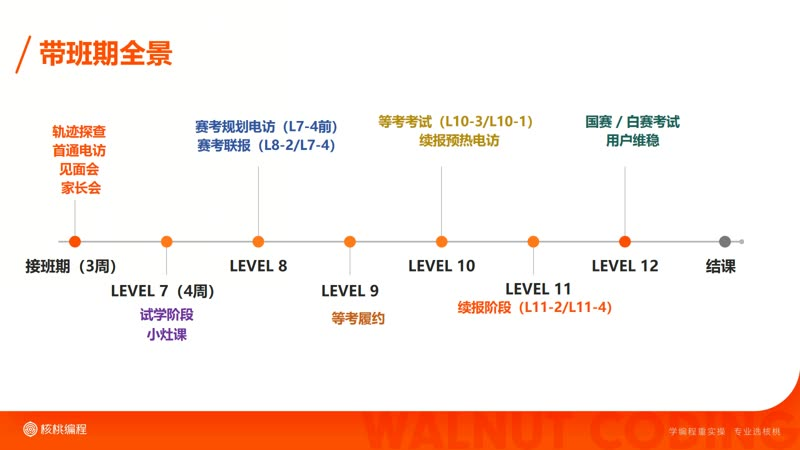
这就是带班期全景图。整个带班周期沿着这条时间轴，分成七个关键阶段，最后结课。我们从左往右走一遍。第一个阶段是接班期，持续3周，要完成轨迹探查、首通电访、见面会和家长会这四件事。第二个阶段是LEVEL 7，持续4周，是试学阶段，也叫小灶阶段，核心动作是小灶课。第三个阶段是LEVEL 8，这里有两个时间节点要记住：赛考规划电访要在L8-4之前完成，赛考报名放在L8-4或L9-2这两个节点。第四个阶段是LEVEL 9，赛考履约，报了名的孩子要把考试落地。第五个阶段是LEVEL 10，在L10-1或L10-3安排等考考试，同时启动续报预热电访。第六个阶段是LEVEL 11，续报阶段，在L11-2或L11-4正式续报。第七个阶段是LEVEL 12，重点做好用户维稳，一直到结课。带班的时候，不要只盯着眼前这一次课、这一次作业，要先看清这张地图：你现在在哪个阶段，下一个节点是什么，这个阶段该重点抓什么。后面会把七个阶段逐个拆开讲。先来确认一下，带班期全景中，“试学阶段”对应哪个阶段？
互动题
带班期全景中，“试学阶段”对应哪个阶段？
- A. LEVEL 8
- B. LEVEL 7（4周）
- C. LEVEL 9
- D. 接班期（3周）
选错后：仅弹正确提示继续
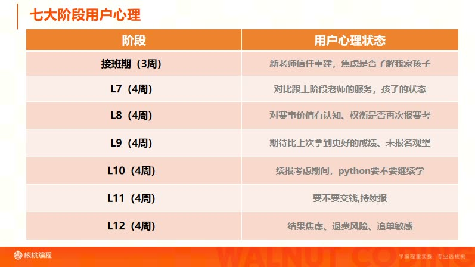
我们做所有运营动作之前，核心前提：先读懂这个阶段家长的心态。心态摸准了，一句话顶十句；摸不准，讲再多都容易起反效果。大家看这张表格，一共七个阶段，每个阶段对应家长不一样的心理状态。接班期，一共 3 周。家长刚对接新老师，信任需要重新搭建，他们心里最大的焦虑就是：这个老师到底懂不懂我家孩子？所以这个阶段千万不要着急推动作、谈转化，首要目标是建立信任，多倾听、多安抚家长的不安。L7 阶段，4 周。家长会不自觉拿你和上一阶段老师的服务做对比，同时持续观察孩子的学习状态，内心核心疑问：新老师行不行、孩子能不能跟上课程。这个阶段不要提前去聊续报，核心是给到家长安全感，持续让家长看见孩子正在适应、看得见进步。L8 阶段，4 周。家长已经认可赛事的价值，现在主要在权衡要不要继续报赛考，关心的核心是：报这个赛事到底值不值得。我们不硬推，而是站在客观角度帮家长判断孩子适不适合参赛，以及参赛之后可以拿到什么样的成果。L9 阶段，4 周。一部分已经参赛的家长，期待孩子取得比上一次更好的成绩；还有一部分家长还在观望、没有报名。这个阶段家长最看重确定性、看重实实在在的结果，沟通的时候，多用孩子课堂表现、作业数据、阶段作品成果去支撑。L10 阶段，4 周，进入续报铺垫期。家长开始思考，要不要继续往下学 Python。这个阶段家长不是不信任老师，而是在衡量时间、金钱成本和学习收益。我们要提前持续铺垫孩子一路的成长变化，让续报是顺理成章的学习延续，而不是突兀的推销。L11 阶段，4 周，属于关键决策期。家长的问题会非常直接：要不要缴费、要不要继续报课。这个阶段沟通动作要聚焦，紧紧围绕家长最关心的核心疑问，讲清楚持续学习的长期价值。L12 阶段，4 周，家长很容易产生结果焦虑，退费风险偏高，对追单、催单格外敏感。这个时候越催，家长抵触感越强。核心原则就是稳：稳住家长情绪、稳住孩子的学习状态，做好成果收口。总结一句话：七个阶段，七种心态。咱们所有的运营节奏、沟通方式，都要跟着家长的心理节奏走。
接下来进入今天最核心的板块，七大阶段重点。从接班期一直到最后的用户维稳，每个阶段我们都讲清楚三件事：阶段目标是什么，要做哪几个核心动作，每个动作做到什么程度才算到位。大家可以边听边对照自己手上的班级。先从第一个阶段，接班期开始。
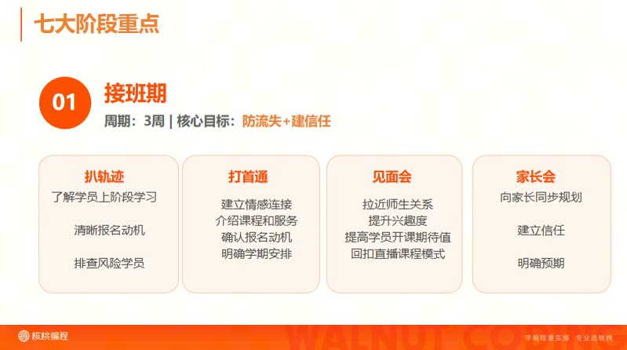
接班期一共 3 周，核心目标就两个：防流失、建立信任。大家要先理清一个前提：家长已经在核桃体验过一轮课程，对咱们的课程模式并不陌生，但对咱们课导是完全陌生的。想要拿到家长的信任，核心就是让家长感受到，咱们的专业度、服务方式，是优于上一任老师的，这是信任建立的基础。接班期我们固定 4 个关键动作，按顺序落地： 第一，扒轨迹。打电话之前，一定要先把孩子的信息摸透。摸清孩子的学习情况、当初报名二阶段的动机，排查是不是高风险学员。只有把这些细节掌握了，沟通才不会空泛，才知道该从哪里切入。第二，首通电话。基于前面扒出来的学员信息，完成首通，搭建情感连接。通话里再次跟家长同步二阶段课程内容、服务标准，确认家长报二阶段的目标，同步好这一阶段整体学习安排。第三，学员见面会。这点非常重要。孩子已经跟着之前的老师学了半年，突然换老师，一定会有不适应。我们通过见面会和孩子拉近关系、提升兴趣度，提高孩子对开课的期待值，同时回扣一下直播课程模式，同时让家长看见：孩子可以适应新老师，状态不受影响。第四，家长会。面向家长正式介绍自己，向家长同步这一阶段的学习规划，讲清楚服务升级在哪里，建立信任、明确预期。把这四步扎实落地，接班期的信任就能稳稳建立，学员流失风险自然减少。来看一道题，以下哪一项不属于接班期的四项重点工作？
互动题
以下哪一项不属于接班期的四项重点工作？
- A. 扒轨迹
- B. 小灶课全覆盖
- C. 打首通
- D. 家长会
选错后：重讲本页重触发
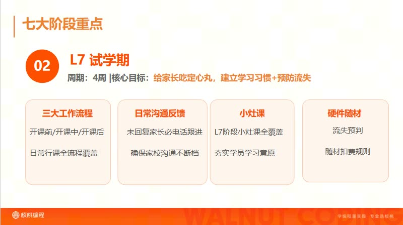
接下来到 L7 阶段，也就是试学期，一共 4 周。这个阶段核心目标，一是给家长吃定心丸，让家长确信选我们没错；二是帮孩子建立学习习惯，同时预防流失。落地有这几项重点动作： 首先，三大基础流程必须落实到位：课前通知家长上课，课中及时同步反馈，课后主动和孩子、家长建联，把日常行课全流程覆盖住。第二，做好日常反馈和沟通。家长平时要忙工作，还有别的学科要对接，咱们发的消息，很容易被忽略、忘记回复。针对一直不回消息、没有学习互动的家长，一定要电话跟进，及时对接，保证沟通不断档。第三，小灶课全覆盖。这个阶段每个孩子都要安排小灶课，借助小灶课和孩子、家长建立连接，一方面强化孩子的学习兴趣，另一方面也直观展示咱们的服务。第四，通过硬件随材预判流失风险。试学期有规则：不拆随材，是可以全额退课时费的。咱们可以观察家长的动作：愿意拆开随材，基本心态稳定；如果迟迟不拆，或者明确说再观望、再等等，就要重点留意，深度沟通，提前做好退费防控。大家一定要记住，试学期是家长犹豫感最强的时候。我们要持续给家长输出孩子这段时间细微、真实的成长变化，用这些变化，给家长吃下定心丸。
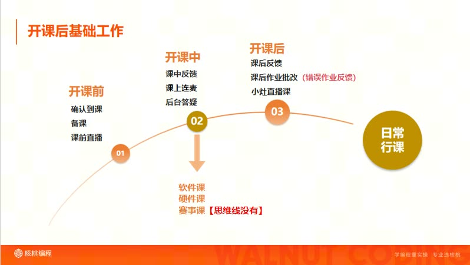
接下来我们单独拆解日常行课全流程，一共分成三大模块：开课前、开课中、开课后。首先是开课前，固定三件事：确认到课、备课、课前直播。确认到课，就是提前摸排学员出勤，清楚哪些孩子正常上课、哪些有可能缺席，预判缺课的学员我们提前跟进。备课，要吃透本节课内容，抓准重难点，完成后台备课操作，上传辅助提示、批改模板，这一项也是我们质检必查项。课前直播，提前进直播间做好准备，同时也是和孩子预热互动很好的方式，调动孩子的上课积极性。然后是开课中，同样三件核心动作：课中反馈、课上连麦、后台答疑。课中反馈，实时把孩子课堂表现同步给家长；课上连麦，鼓励孩子主动参与，拉高课堂投入度；后台答疑，第一时间响应孩子和家长课堂上提出的各类问题。最后是开课后，重点三件事：课后反馈、作业批改、小灶直播补充辅导。作业要批改到位，错题、有问题的作业单独给家长反馈，配套小灶直播做针对性补强。这里大家注意：课程分软件课、硬件课、赛事课，基础流程全部统一；思维线是没有赛事课的。日常行课是咱们课导工作的基本面，这个流程扎扎实实落地，带班质量才有基本保障。
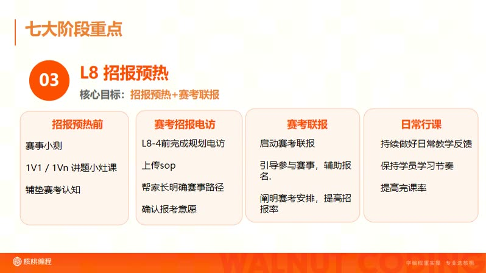
接下来进入 L8 阶段，也就是招报预热阶段。这个阶段核心目标，就是把赛事招报预热电话落地，同时提升赛考联报达成率，这块非常关键。首先第一点，做好招报预热前的准备工作。我们要安排赛事小测，依托小测成绩和家长做反馈、做沟通。预热期间，我们可以开一对一或者一对多的讲题小灶课，让家长直观看到咱们在赛事配套上的服务；同时借着成绩反馈，给家长铺垫，让家长建立认知：咱们孩子是具备参赛能力的。第二，赛考规划电访。一定要在 L8-4 之前完成规划电访。大家记住，每个阶段都有固定工作流程，节奏一旦拖慢，后面阶段的动作就会全部堆积。电访环节严格按照 SOP 来走，打完后上传 SOP，沟通里清晰告知家长赛事开始招报，讲清楚完整赛事路径、为什么要参加二阶段的白名单国家级赛事，以及我们整体的规划，最后收集家长的报考意愿。第三，报名启动阶段，同步清楚时间节点。要跟家长讲明白报名起止时间、考试时间，引导家长在规定周期内完成报名，以此提升招报转化率。最后重点提醒：做招报的同时，千万不要打乱日常基础动作。咱们现在才到 L8，这一阶段从 L7 到 L12 共 6 个 Level，后面还有四个月左右的服务周期。服务永远是根基，日常反馈、正常行课节奏都不能停。
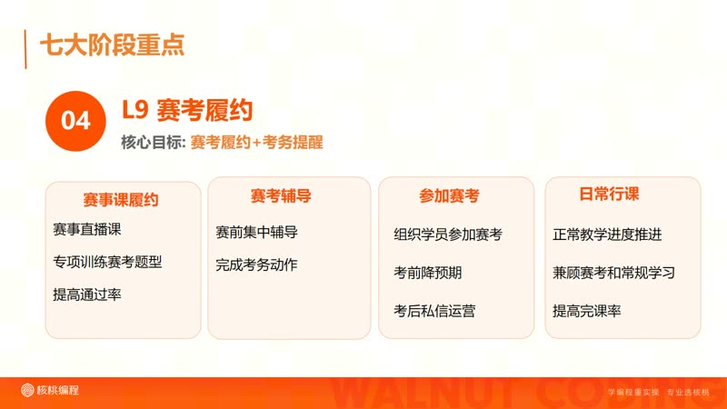
接下来进入 L9 阶段，也就是赛事履约阶段。本阶段核心就是赛事履约、考务提醒，这个阶段非常关键。已经报名赛事的家长，心里是期待孩子拿到更好成绩的，毕竟他们在第一阶段已经体验过；还有一部分家长还在观望。我们要用落地的服务、孩子真实的课堂表现，给到家长信心。这里大家一定要记住一条：不能因为家长没有报名赛事，就区别对待孩子。整个阶段我们分四大板块同步推进： 第一，赛事履约课。按时上好赛事直播课，带着孩子做赛考专项训练。给大家一个小建议：哪怕孩子没有报名赛事，也可以正常参与专项练习。我们这一块的目标，一方面提升参赛孩子的通过率，另一方面兑现之前跟家长承诺好的全套赛事配套服务。第二，落实全部考务确认工作。提醒家长提前检测设备、考试环境，准考证、考试入口、操作要求等细节逐一同步到位。有些家长之前参加过赛事，流程比较熟悉；还有一类是第一阶段没参赛，经过咱们沟通这次才报名的家长，这类我们要重点关注，多跟进。第三，组织学员参加赛考，考前做好预期管理，考后及时私信运营跟进家长。不要一味拉高期待，帮孩子和家长放平心态。尤其是平时训练成绩不算突出的孩子，一定要提前降低预期，跟家长传递清楚：参与本身也很有价值，提前做好结果层面的预期管理。第四，稳住主线日常行课。千万不要因为备战赛事，把主线课程落下。课前、课中、课后的标准化动作照常推进，赛事辅导和常规学习两头兼顾，守住咱们的完课率。总结一下：L9 是兑现赛事服务承诺的阶段，我们不能只盯着考试。常规课、赛事辅导双线并行，让家长实实在在看到服务和成果。
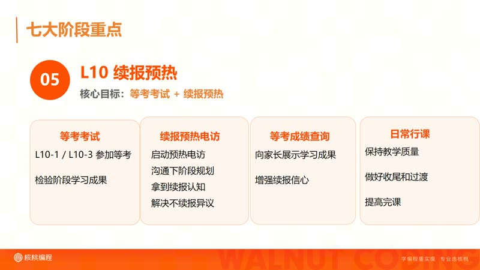
第五个阶段，L10续报预热，核心目标是等考考试加续报预热。这个阶段家长开始考虑要不要继续学，所以我们要用实实在在的成果，提前把续报的认知铺垫好。重点抓四件事。第一，等考考试。在L10-1或L10-3组织学员参加等考，检验阶段学习成果。第二，续报预热电访。启动预热电访，和家长沟通下一阶段的学习规划，让家长对续报有认知，提前了解并解决家长不续报的异议。要注意，预热电访不是催费，核心是铺垫沟通，让家长提前有心理准备。第三，等考成绩查询。成绩一出来，第一时间向家长展示学习成果，用真实的结果增强家长的续报信心。孩子考得好，可以跟家长说，这一阶段学习效果很明显，下一阶段我们可以挑战更高的目标。成绩不理想也不要回避，可以说，这次考试暴露出一些薄弱点，正好在下一阶段针对性补齐。第四，日常行课。保持教学质量，做好阶段收尾和过渡，提高完课率。这个阶段是续报的前奏，前奏铺垫到位，到了正式续报阶段，沟通会顺畅很多。来看一道题，续报预热电访的核心目的是？
互动题
续报预热电访的核心目的是？
- A. 铺垫沟通，聊下一阶段规划、提前处理不续报的异议
- B. 直接催家长交费
- C. 通知优惠截止时间
- D. 确认孩子是否退课
选错后：重讲本页重触发
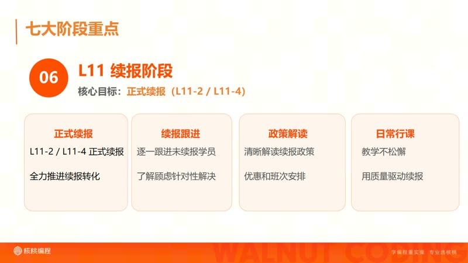
接下来第六个阶段，L11 正式续报阶段，核心目标就是完成正式续报，关键时间节点在 L11-2 或者 L11-4。这是咱们整个带班周期里最关键的转化战役，前面所有阶段的积累、铺垫，都要在这个阶段落地兑现。我们重点抓好四件事： 第一，推进正式续报。卡在 L11-2、L11-4 这两个节点全力推进转化，该打电话就打电话，该发消息就发消息，有需要的学员直接一对一深度沟通。第二，持续跟进未续报学员。逐个跟进还没有报名的家庭，摸清家长真实顾虑：是担心价格、纠结学习效果，还是时间排不开，或是其他问题，找到根源再针对性化解。大家记住，家长说 “我再考虑一下”，不等于拒绝，很多时候只是需要我们再往前推一把。第三，清晰解读续报政策。把优惠活动、班次安排给家长讲明白、讲透彻，信息传递到位，家长做决策的速度才会更快。第四，守住日常行课底线。续报攻坚期，教学绝对不能松懈，我们要用教学质量带动续报。家长能看到，越是到后期，我们依旧认真负责，他才更愿意让孩子继续跟着我们学习。大家一定要记住，转化不是硬逼单，是前面所有服务、成果铺垫之后，水到渠成的落地，课不能放，服务不能掉。
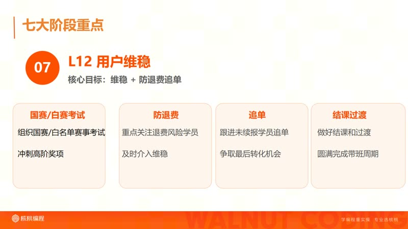
第七个阶段，L12 用户维稳阶段，这是咱们带班周期的最后一站，核心目标就是维稳、防退费、做最后的追单。这个阶段家长很容易产生结果焦虑，退费风险偏高，而且对追单动作格外敏感，所以我们所有动作记住一个原则：稳，千万不能着急。同样重点抓好四件事： 第一，组织国赛、白名单等国家级赛事考试，冲刺高阶奖项。这是孩子整个学习周期的高光节点，也是我们给到家长的最后一次学习成果交付。第二，重点做好防退费工作。持续盯紧高风险学员，一旦发现退费苗头第一时间介入维稳。像看到其他学员都续报了、自家孩子赛事结果不理想这类情况，都容易让家长萌生退费想法，我们要主动沟通、安抚情绪，提前化解风险。第三，温和追单。针对还没有完成续报的学员，做最后一轮跟进，抓住收尾的转化机会。追单一定要讲究方式，不能强行施压，站在家长的视角帮他分析利弊，把选择权交给家长。第四，做好结课过渡。完整走完结课流程，做好学习交接，圆满收尾整个带班周期。哪怕这个孩子最后没有选择续报，我们也要善始善终，服务不打折扣，好口碑就是这样一点点攒下来的。到这里，咱们课导带班全周期七大阶段就全部拆解完毕了。
七大阶段讲完了，接下来进入第四个板块，成果验证。前面讲了这么多方法和流程，大家可能会问：这些动作真的有用吗？落地之后能不能拿到结果？接下来我们就用真实的带班战绩来看一看，把课导工作做扎实，能收获什么样的成果。
我们先来看武汉铁军的喜报。这是武汉团队在招报和续报战役里拿到的成绩。这些课导就是按今天讲的这套工作流在执行，从接班期的首通电访开始，每一步都走得很扎实，最后拿到了这样的结果。工作流不是纸上谈兵，是一线实打实打出来的经验，照着做，你也能出成绩。
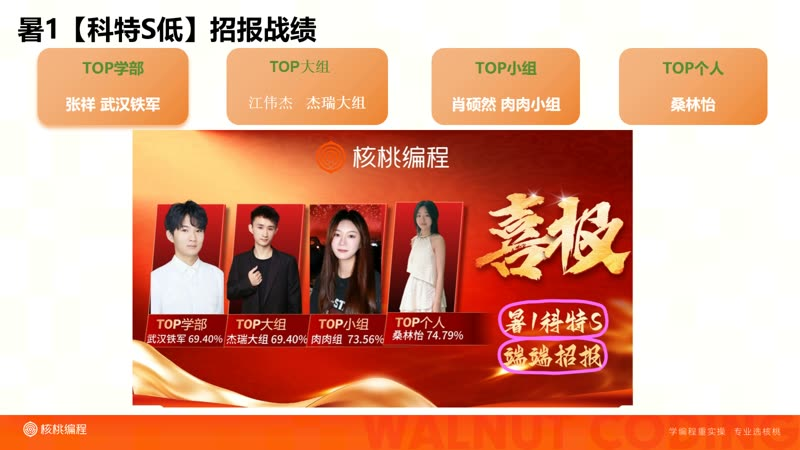
先看暑1科特S低的招报战绩。TOP学部是张祥带领的武汉铁军，招报率69.40%；TOP大组是江伟杰带领的杰瑞大组，招报率同样是69.40%；TOP小组是肖硕然带领的肉肉小组，招报率73.56%；TOP个人是桑林怡，个人招报率74.79%。从学部到大组，再到小组和个人，每一层都跑出了高数据。靠的就是整个团队做事细致，每个课导都把带班流程落到实处，节点动作不打折扣，学员跟进和学情服务做细做到位。标准化的工作流坚持落地，从团队到个人都能拿到好结果。
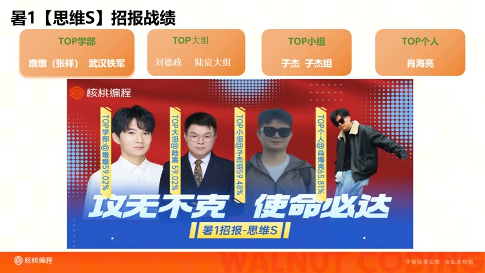
再看暑1思维S的招报战绩。TOP学部依旧是墩墩老师，也就是张祥带领的武汉铁军，招报率59.02%；TOP大组是刘德政带领的陆宸大组，59.02%；TOP小组是子杰带领的子杰组，59.48%；TOP个人是肖海亮，65.81%。他们的共同点是什么？就是课导工作做得细、做得实。大家后面带班可以对标一下，看看自己在哪个环节还有差距，是首通打得不够好，还是日常反馈不够及时，还是续报跟进不够到位。找到差距补上，下一次上榜的可能就是你。
再看春8期的续报战绩。科特S学部单期王者军团，还是墩墩老师张祥带领的武汉铁军，端端续报69.32%；科特S个人单期战神是佩妮组的陈志文，端端续报77.98%；思维S个人单期战神是小河组的郑佳炜，端端续报69.44%。能拿下这么高的续报数据，核心是他们坚持全周期做好学员经营，而不是等到续报期才临时发力。大家可以对照着复盘一下，自己带班时学情维护和阶段成果交付有没有做到位。日常服务做扎实，续报自然会有好结果。
接下来，我们一起看西安1部的喜报，看看西安团队交出的成绩。
先看暑3思维S的招报战绩。TOP学部是宋超带领的西安1部，招报率65.06%；TOP大组是宪涛大组，65.06%；TOP小组是甜心小组，65.84%；TOP个人是甜心组的王小杰，69.03%。这些团队和个人，都是这次招报战役里的佼佼者。
再看暑2思维S的招报战绩。TOP学部还是宋超带领的西安1部，招报率66.36%；TOP大组是宪涛大组，66.36%；TOP小组是醉柳小组，68.90%；TOP个人是高园定，72.50%。他们的共同点是什么？就是课导工作做得细、做得实。大家后面带班可以对标一下，看看自己在哪个环节还有差距，是首通打得不够好，还是日常反馈不够及时，还是续报跟进不够到位。找到差距补上，下一次上榜的可能就是你。
接下来，我们再看西安2部的喜报，看看这支团队打出的战绩。
先看暑5算法的招报战绩。TOP学部是国艳带领的西安2部，招报率78.43%；TOP大组是曙光大组，78.43%；TOP小组是威廉组，79.26%；TOP个人是威廉组的孙雨默，87%。他们的共同点是什么？就是课导工作做得细、做得实。大家后面带班可以对标一下，看看自己在哪个环节还有差距，是首通打得不够好，还是日常反馈不够及时，还是续报跟进不够到位。找到差距补上，下一次上榜的可能就是你。
接下来，一起看西安霞霞部的喜报，见证这支团队拿下的成果。
再看暑2算法的招报战绩。TOP学部是霞霞部，招报率79.67%；TOP大组是山川大组，79.55%；TOP小组是艾琳小组，83.41%；TOP个人是史梦娇，90.38%。他们的共同点是什么？就是课导工作做得细、做得实。大家后面带班可以对标一下，看看自己在哪个环节还有差距，是首通打得不够好，还是日常反馈不够及时，还是续报跟进不够到位。找到差距补上，下一次上榜的可能就是你。
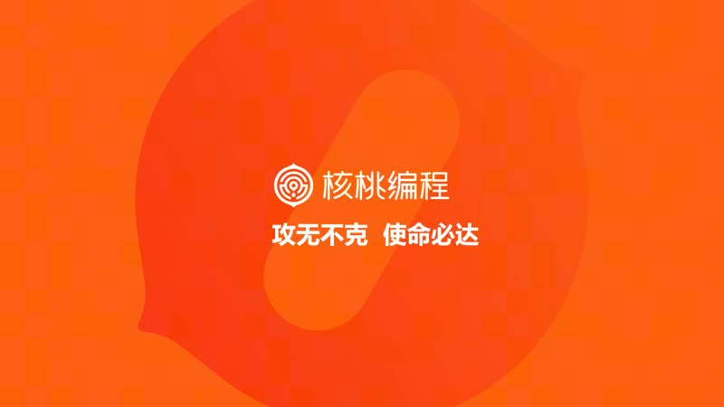
最后我们一起来回顾今天全部内容。从课导岗位价值认知，到带班全流程全景图，再到七大阶段每个节点对应的重点动作，最后我们也用真实战绩做了成果验证。希望大家把今天学到的内容带回日常工作当中，一步一个脚印落地执行。课导这份工作没有捷径，就是把每一件小事做扎实，用心服务好每一位家长，跟进好每一个孩子。最后送给大家八个字，也是咱们9元铁军的口号：攻无不克，使命必达。祝愿大家后续带班，都能拿下满意的成绩！
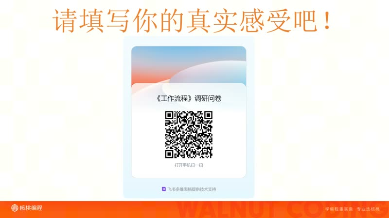
接下来，请大家拿出手机，扫描屏幕上的二维码，填写这份工作流程调研问卷。今天培训最真实的感受，不管是收获、疑问，还是希望后续补充的内容，都可以写进问卷。大家的反馈，是我们持续优化培训内容的重要依据。感谢各位！
题库（阶段小测 + 综合测试）
T-S01 · 阶段练习题 · 工作流・阶段 1 · 答案 C
课导这份工作最核心的价值是什么？
- A. 盯孩子上课、给孩子批改作业
- B. 提醒家长缴费、完成续报
- C. 把家长看不见的学习过程，变成家长能看得见的进步
- D. 保证班级的完课率数据达标
T-S02 · 阶段练习题 · 工作流・阶段 1 · 答案 B
在“孩子在学→课导记录→课导翻译→家长感知→续报决策”链条中，“课导翻译”指的是？
- A. 到课、作业、作品、课堂表现
- B. 课后反馈、阶段报告，把代码说成成长
- C. 上课、写代码、做作品
- D. 家长自己得出结论，愿意继续投入
T-S03 · 阶段练习题 · 工作流・阶段 1 · 答案 C
按“课导价值三层面”，做好课导工作在“对自己”层面的体现是？
- A. 完课率、续报率守住，每个孩子都能产生长期价值
- B. 孩子上课有人盯，进步看得见
- C. 续报率=你的绩效+晋升，最后回扣自己的收入和履历
- D. 续报靠运气，收入和能力都上不去
T-S04 · 阶段练习题 · 工作流・阶段 1 · 答案 A
科特班级的带班周期为半年，一个课导需要带两个班级，带班时间从周四晚七点、周五晚七点、周六晚七点这三个时段中分配两个给每位课导。【判断】
- A. 对
- B. 错
T-S05 · 阶段练习题 · 工作流・阶段 1 · 答案 D
对比科特线与思维线的带班信息，两者不同的是哪一项？
- A. 带班周期
- B. 班级人数
- C. 带班时间段
- D. 课时安排
T-S06 · 阶段练习题 · 工作流・阶段 1 · 答案 ABC
关于科特线带班信息，下列说法正确的有？（多选，选 3 项）
- A. 带班周期为半年
- B. 一个课导带两个班级
- C. 用户来源为前任老师续报
- D. 每个 Level 每周一次课，一次一课时
T-S09 · 阶段练习题 · 工作流・阶段 1 · 答案 C
在价值链条中，“家长感知”环节家长的感受是？
- A. 家长自己得出结论，愿意继续投入
- B. 到课、作业、作品、课堂表现
- C. “孩子真的变了”，这钱花得值
- D. 上课、写代码、做作品，家长看不见过程
T-S10 · 阶段练习题 · 工作流・阶段 2 · 答案 B
按“七大阶段用户心理”，L9家长的心理状态是？
- A. 对赛事价值有认知、权衡是否再次报赛考
- B. 期待比上次拿到更好的成绩、未报名观望
- C. 续报考虑期间，python要不要继续学
- D. 要不要交钱，持续报
T-S11 · 阶段练习题 · 工作流・阶段 2 · 答案 ABC
按 L7–L12 版带班期全景，下列节点与时间对应正确的有？（多选，选 3 项）
- A. 赛考联报：L8-2/L7-4
- B. 等考考试：L10-3/L10-1
- C. 续报阶段：L11-2/L11-4
- D. 国赛/白赛考试：LEVEL 10
T-S12 · 阶段练习题 · 工作流・阶段 2 · 答案 B
按“七大阶段用户心理”，L7（4周）家长的心理状态是？
- A. 新老师信任重建，焦虑是否了解我家孩子
- B. 对比跟上阶段老师的服务，孩子的状态
- C. 对赛事价值有认知、权衡是否再次报赛考
- D. 结果焦虑、退费风险、追单敏感
T-S13 · 阶段练习题 · 工作流・阶段 2 · 答案 D
L1–L6 版“七大阶段用户心理”中，L6（4周）家长的心理状态是？
- A. 要不要交钱，持续报
- B. 期待比上次拿到更好的成绩、未报名观望
- C. 续报考虑期间，python要不要继续学
- D. 结果焦虑、退费风险、追单敏感
T-S14 · 阶段练习题 · 工作流・阶段 2 · 答案 B
家长进入续报考虑期，开始思考 “要不要继续学”，这个阶段是？
- A. L9 等考履约阶段
- B. L10（完成等考考试并启动续报预热电访）
- C. L11 续报阶段
- D. L12 用户维稳阶段
T-S15 · 阶段练习题 · 工作流・阶段 2 · 答案 B
家长进入续报考虑期，开始思考 “要不要继续学”，这个阶段是？
- A. L3 等考履约阶段
- B. L4（完成等考考试并启动续报预热电访）
- C. L5 续报阶段
- D. L6 用户维稳阶段
T-S16 · 阶段练习题 · 工作流・阶段 2 · 答案 ABC
关于 L7–L12 版七大阶段用户心理，下列对应正确的有？（多选）
- A. 接班期：新老师信任重建，焦虑是否了解我家孩子
- B. L8：对赛事价值有认知、权衡是否再次报赛考
- C. L11：要不要交钱，持续报
- D. L12：期待比上次拿到更好的成绩、未报名观望
T-S17 · 阶段练习题 · 工作流・阶段 2 · 答案 A
等级考试的履约安排在国赛/白名单比赛前面？
- A. 对
- B. 错
T-S18 · 阶段练习题 · 工作流・阶段 3 · 答案 A
接班期是整个带班周期的地基，这个阶段的核心目标是？
- A. 防流失、建信任
- B. 给家长吃定心丸、帮孩子建立学习习惯
- C. 赛考履约、考务提醒
- D. 正式续报、全力冲刺
T-S19 · 阶段练习题 · 工作流・阶段 3 · 答案 ABC
关于接班期“扒轨迹”“打首通”的工作内容，下列对应正确的有？（多选）
- A. 扒轨迹：了解学员上阶段学习
- B. 扒轨迹：排查风险学员
- C. 打首通：介绍课程和服务、明确学期安排
T-S20 · 阶段练习题 · 工作流・阶段 3 · 答案 C
试学期有一条硬规矩：给家长发了消息但家长没有回复，正确的做法是？
- A. 等家长主动回复，避免打扰
- B. 直接在系统里标记为流失学员
- C. 必须电话跟进，确保家校沟通不断档
- D. 只把情况报给主管，等主管处理
T-S21 · 阶段练习题 · 工作流・阶段 3 · 答案 A
日常行课全流程中，开课前需要完成的三件事是？
- A. 确认到课、备课、课前直播
- B. 课中反馈、课上连麦、后台答疑
- C. 课后反馈、作业批改、小灶直播课
- D. 赛事小测、规划电访、赛考联报
T-S22 · 阶段练习题 · 工作流・阶段 3 · 答案 C
日常行课“开课中”涉及软件课、硬件课、赛事课，其中 图形化“思维线没有”的是？
- A. 软件课
- B. 硬件课
- C. 赛事课
- D. 小灶直播课
T-F01 · 本章综合测试题 · 图形化课导工作流·全章 · 答案 C
L8 招报预热阶段，赛考规划电访要求在哪个节点前完成并上传 SOP？
- A. L8-1
- B. L8-2
- C. L8-4
- D. L9-1
T-F02 · 本章综合测试题 · 图形化课导工作流·全章 · 答案 C
L2 招报预热阶段，赛考规划电访要求在哪个节点前完成并上传 SOP？
- A. L2-1
- B. L2-2
- C. L2-4
- D. L3-1
T-F03 · 本章综合测试题 · 图形化课导工作流·全章 · 答案 ABC
关于 L9 赛考履约阶段的工作，下列说法正确的有？（多选）
- A. 开设赛事直播课，专项训练赛考题型，提高通过率
- B. 赛前集中辅导，完成考务动作
- C. 考前降预期，考后私信运营
- D. 启动续报预热电访，拿到续报认知
T-F04 · 本章综合测试题 · 图形化课导工作流·全章 · 答案 D
L10 续报预热阶段，“等考成绩查询”这项工作的作用是？
- A. 清晰解读续报政策，优惠和班次安排
- B. 重点关注退费风险学员，及时介入维稳
- C. 帮家长明确赛事路径，确认报考意愿
- D. 向家长展示学习成果，增强续报信心
T-F05 · 本章综合测试题 · 图形化课导工作流·全章 · 答案 B
续报阶段的正式续报、全力推进转化，应在哪两个时间节点？
- A. L10-2 或 L10-4
- B. L11-2 或 L11-4
- C. L11-1 或 L11-3
- D. L12-1 或 L12-2
T-F06 · 本章综合测试题 · 图形化课导工作流·全章 · 答案 B
续报阶段的正式续报、全力推进转化，应在哪两个时间节点？
- A. L4-2 或 L4-4
- B. L5-2 或 L5-4
- C. L5-1 或 L5-3
- D. L6-1 或 L6-3
T-F07 · 本章综合测试题 · 图形化课导工作流·全章 · 答案 ABC
关于 L12 用户维稳阶段，下列说法正确的有？（多选）
- A. 组织国赛/白名单赛事考试，冲刺高阶奖项
- B. 重点关注退费风险学员，及时介入维稳
- C. 跟进未续报学员追单，争取最后转化机会
- D. 正式续报，全力推进续报转化
T-F08 · 本章综合测试题 · 图形化课导工作流·全章 · 答案 AB
接班期的见面会要达成哪些目的？（多选）
- A. 拉近师生关系
- B. 提升兴趣度、提高学员开课期待值
- C. 向家长同步规划、明确预期
T-F09 · 本章综合测试题 · 图形化课导工作流·全章 · 答案 C
日常行课中「开课后」的核心工作是？
- A. 确认到课与后台备课
- B. 课中反馈、课上连麦、后台答疑
- C. 课后反馈、作业批改，错题作业单独反馈，并配套小灶直播课补充辅导
- D. 课前进入直播间做各项准备
T-F10 · 本章综合测试题 · 图形化课导工作流·全章 · 答案 C
L9 赛考履约阶段的核心目标是？
- A. 招报预热+赛考联报
- B. 等考考试+续报预热
- C. 赛考履约+考务提醒
- D. 维稳+防退费追单
T-F11 · 本章综合测试题 · 图形化课导工作流·全章 · 答案 A
L10 续报预热阶段，学员参加等考的节点是？
- A. L10-1 / L10-3
- B. L10-2 / L10-4
- C. L11-2 / L11-4
- D. L9-1 / L9-3
T-F12 · 本章综合测试题 · 图形化课导工作流·全章 · 答案 C
接班期四项工作中，“家长会”的作用是？
- A. 拉近师生关系、提升兴趣度
- B. 建立情感连接、确认报名动机
- C. 向家长同步规划、建立信任、明确预期
- D. 了解学员上阶段学习、排查风险学员